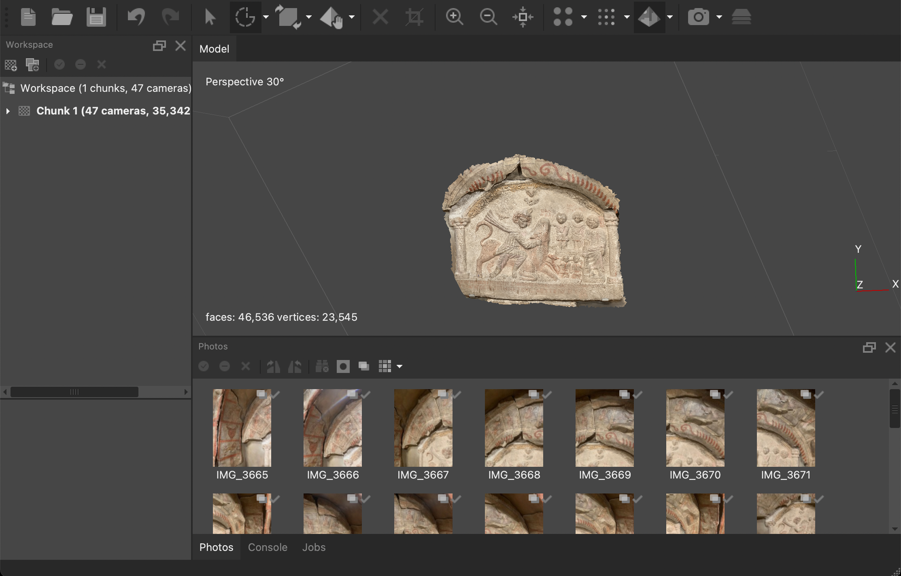

Data Visualization
The data visualization proved to be more difficult than anticipated and accounted for a large chunk of my time spent on this project. The students working on the humanities side of the project put together a great excel sheet of information on 20 different objects at the YUAG that were excavated from the mithraeum at Dura Europos. Grateful for their work, I set out to create an interactive representation of the data that would allow users to recognize trends. When considering this task, the D3 data visualization that we used in the intro to web development immediately came to mind, but the force node diagram needed tweaking before it was suitable for our set of information. Observing how the shape of the text changes to be less of a congested block in the figure below shows how much cleaning goes into the data before it can be put into the D3 visualizer.
I started by downloading the excel file as a csv and modifying the table2graph.py converter from the problem set so that it would convert the information in the csv to a usable json file that can be graphed using the D3 program. This worked technically, but visually it was not appealing. There were an overwhelming number of nodes of about a dozen different colors. Most of them were only connected to one other node and many just floated away upon loading the graphic because they had no edges attached to them. The issue was that the sheet held a lot of information, information that was important for the site, but didn’t need to be presented in the graphic. I met with Lauren from the Humanists and we decided to keep the 20 items, but to narrow down the properties that were illustrated in the graphic to just phase and material. I felt as though the resulting graphic holds enough information that ties the objects together without overwhelming the user with tons of colors on an untraceable web. Figure 2 below shows the force node diagrams before and after the unnecessary data was cut out.

Photogrammetry
Our group used photogrammetry to capture the Yale University Art Gallery Mithraeum scene and some of the artifacts found in the excavation that Yale had access to. We blocked a few days in our work schedule and dedicated them solely to capturing photos of the objects and rendering them in agisoft. One of the issues we ran into was capturing all the parts of the mithraeum scene. It is such a big structure that we would often miss a certain corner or had something in the picture that wasn’t supposed to be there. We also had this issue with some of the objects we captured at West Campus. Luckily the Agisoft premium membership allowed us to delete edges and faces. The objects captured here would be instrumental to telling the story of the Mithraeum in Unity and on the website.
Why a Game Engine for the Dura Experience?
The group talked about the several ways in which we could bring the Mithraeum at Dura Europos to real life. We knew we wanted to combine the photogrammetry, some of our own artistic capabilities, and the plans from the final phase of the excavations. But we spent a lot of time thinking about not only how these aspects would interact with each other, but how the user would interact with the scenes. We originally were gonna create a Blender video, but this lacks interactivity. We want the users to control a character moving through space, and the best way to capture this movement as well as our models is a Game Engine.
The Dura Experience
There were many game engines to choose from, but we decided to go with Unity. There were many benefits to using Unity. What made Unity appealing though was its widespread use amongst amatuer gamers as well its use of the C# language. This would make the translation and use extremely easy to understand for us as we are completely new to game development. There’s also a huge supportive community that we will take advantage of in our use of this new technology.
After getting the character to move it was time to put together the 3D scene in Unity. Including the humanities students we constructed the various different parts of the mithraeum in blender and other 3D modeling programs. We played around the textures trying to replicate what the mithraeum may have looked like. We know it was brown because it was made out of adobe brick. We also know the floor was made of some type of stone from the excavation reports. After building the temple and including the photogrammetry of the scene at the YUAG, we decided to add some embellishments. We really wanted to replicate the environment in the YUAG and part of this includes adding light. We know the Romans used oil lamps, candles, and torches. For simplicity we stuck with candles and torches as these were the easiest to design. But with this comes some design liberties we took. We don’t know for sure how these would have been used in the Mithraeum which may be considered historically inaccurate.
But this raises an important ethical question – do the artistic liberties we have taken creating this Mithraeum impact a general public understanding of what the Mithraeum may have looked like? To answer this question, historians make conjectures all the time. Between our research as computer scientists and art historians, we made these conjectures based on the works of previous historians. We know there is gold gilding and that candles were used in the Mithraeum. Though we aren’t so sure about the torches, there had to be some other lighting in the Mithraeum of some capacity as there are very tiny windows in the Mithraeum.
As computer scientists and historians we tried our best with the materials to create the mithraeum and the context the Mithraeum existed in. Adding walls and buildings adds to this context. Going forward we as a group would like to build more and more of Dura Europost and work on creating the whole city.